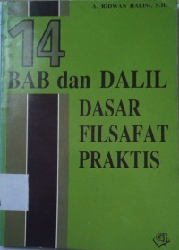

Pameran Buku
-
.jpeg) "10 sikap positif menghadapi kesulitan hidup"
"10 sikap positif menghadapi kesulitan hidup"
-
.jpeg) "101 cara pelatihan & pembelajaran aktif, Ed.2"
"101 cara pelatihan & pembelajaran aktif, Ed.2"
-  "14 bab dan dalil dasar filsafat praktis"
-
.jpeg) "40 Hari Mencari : ilmu refleksi personal atas "bagaimana aku belajar?""
"40 Hari Mencari : ilmu refleksi personal atas "bagaimana aku belajar?""
-
.jpeg) "201 Pertanyaan Terbaik Untuk Wawancara Kerja"
"201 Pertanyaan Terbaik Untuk Wawancara Kerja"